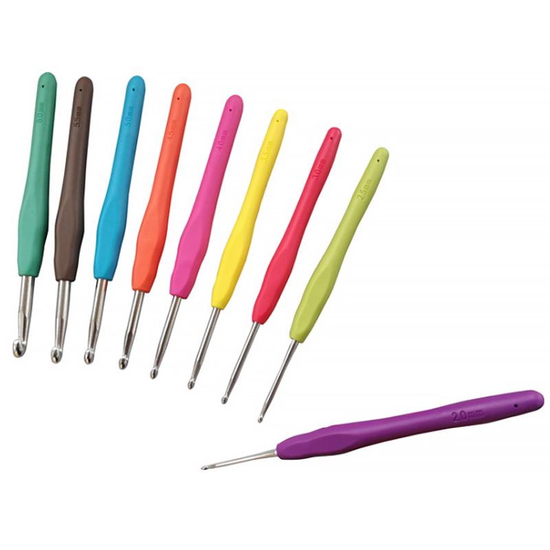
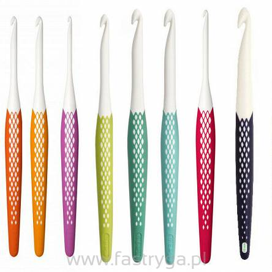
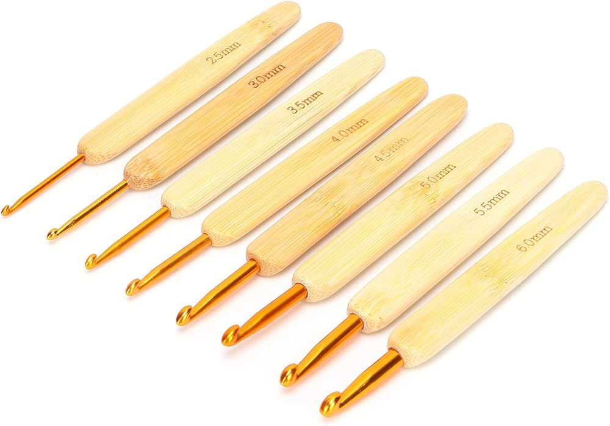
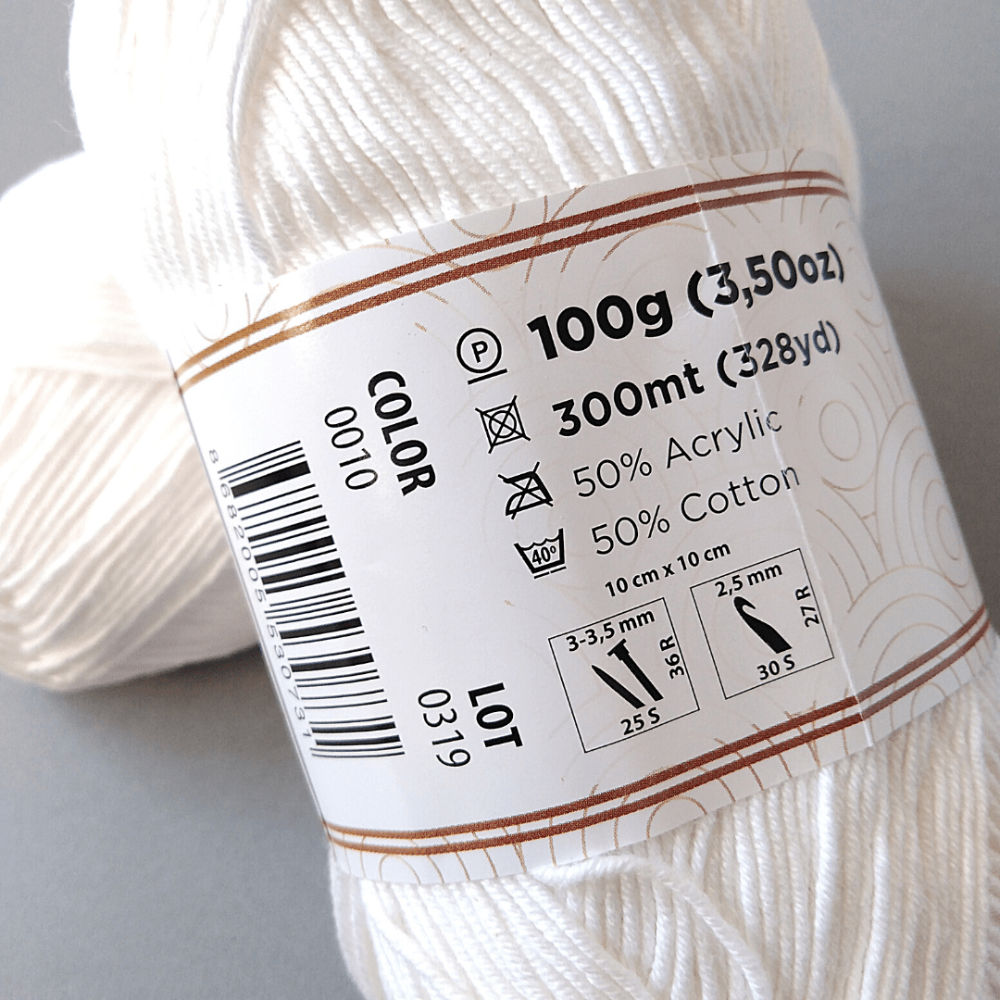

Rodzaje Szydełek
Szydełkowanie to sztuka tworzenia przy użyciu różnych rodzajów szydełek. Każdy rodzaj szydełka ma swoje unikalne cechy, które wpływają na sposób, w jaki projektowane są szydełkowe dzieła.
-
Szydełko z gumowym uchwytem
Szydełko z gumowym uchwytem zapewnia komfort i ergonomiczny chwyt. To doskonały wybór dla osób, które szydełkują przez dłuższy czas. Dostępne w różnych rozmiarach.
 -
Szydełko ergonomiczne
Szydełko ergonomiczne ma specjalnie zaprojektowany kształt, który redukuje napięcie w dłoniach podczas szydełkowania. Idealne dla osób z problemami z stawami.
 -
Szydełko drutowe
Szydełko drutowe posiada ruchomy drut, co ułatwia tworzenie dużych projektów. Idealne do robienia dzianin i szydełkowania z większą ilością włóczki.

Dobór Szydełka Do Włóczki
Aby dobrać odpowiednie szydełko do włóczki należy patrzeć na oznaczenia na etykietach włóczek
